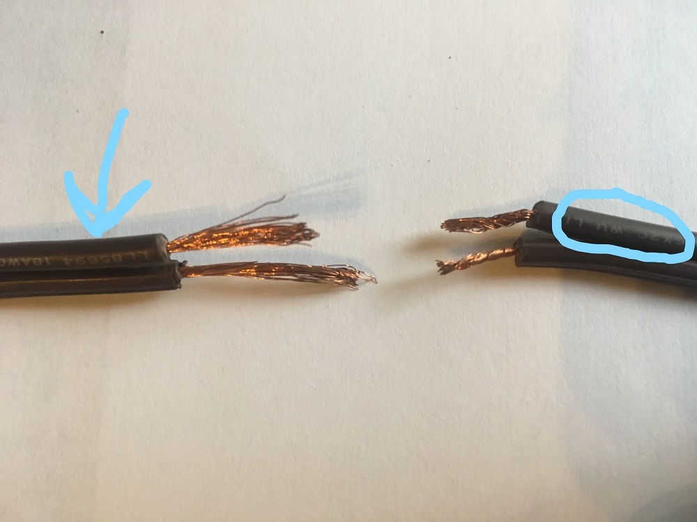

Something happened to my lamp!

Important Note!
Keeping the two individual cords seperate is extremely important.
Most indoor cords will have writing on one, but not the other.
If this is NOT the case, you will need to mark one of the cords on both sides of the break.
I suggest using a permanent marker.
This will ensure that you are able to reconnect each wire to the same one it was originally connected to.

Materials

- wirecutters
- scissors - not shown
- rounded pliars (can use tweezers)
- electrical tape (preferably the same color as the cord)
- a steady hand